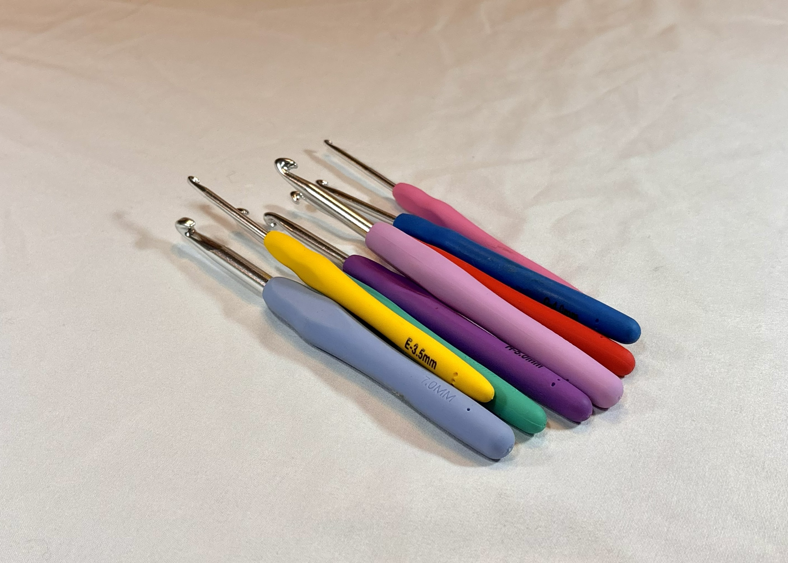
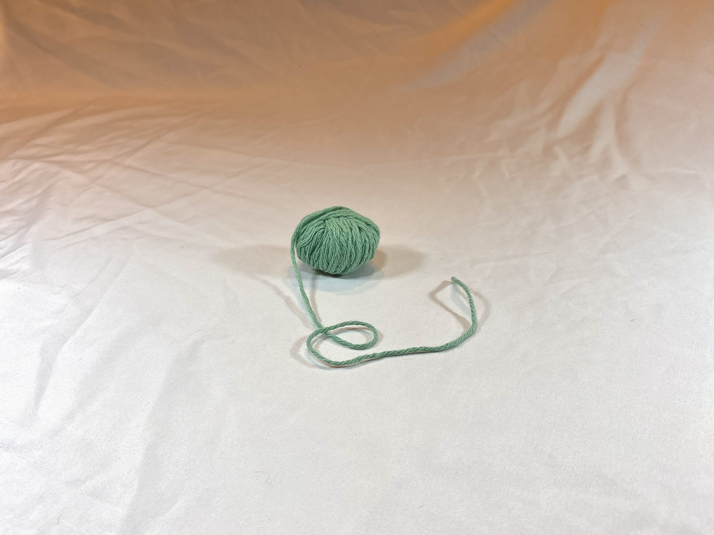
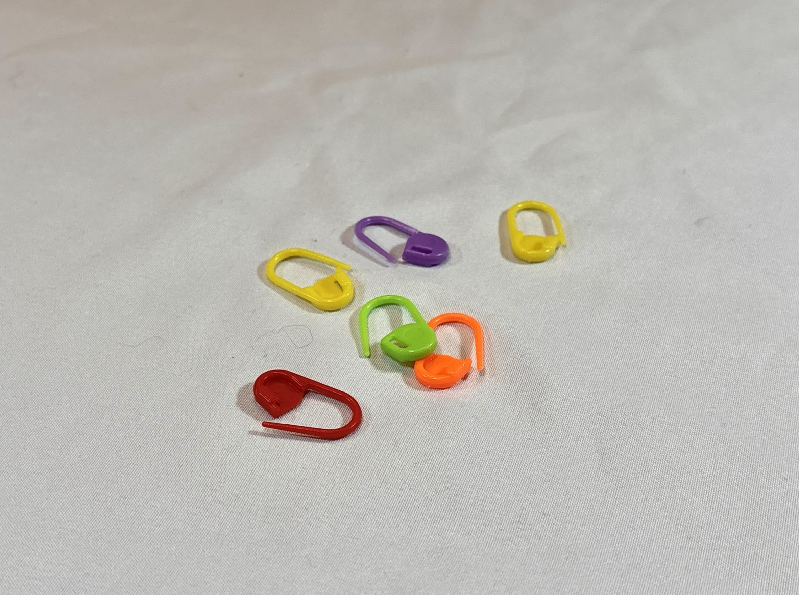

Here is a breakdown of all of the supplies that you'll need to get started.

Hook
Hook size(gauge): Crochet hooks come in a wide array of different sizes! They are most commonly sized by their mm measurement. Recommended hook size is typically outlined on the packaging of a skein of yarn. Hook size alters the stitch size, which alters the tension and gauge of a project. Beause of this, many patterns will offer a gauge guide, a size reference that helps to level the size of a project. For example, if the project says that after row 4, the project should measure 3 inches by 4 inches, you are able to assess if your tension or hook size need to change to mantain the proper size (a detail that is most relevent when creating clothing).
Hook style: A few different styles of hooks exist. I find metal hooks with a wider grip (as pictured) to be the easiest to use and make my hand cramp the least.

Yarn
Yarn size (weight): Yarn size is printed on the back of a ball of yarn and receives a number 1-6, where 1 is the thinnest yarn and 7 is the bulkiest yarn. Using different yarn sizes will impact the tightness of your stitches and how stiff the project turns out to be. Yarn packages will give a recommended hook size for the yarn weight, but it is important to keep an eye on the size of a project while making it, using the gauge guide to ensure proper sizing.
Yarn type: There are many different material makeups available for yarn which vary in price. Wool and 100% cotton yarns will be more high end than synthetic yarns, though most will be just fine for any project. One thing to keep in mind is that synthetic yarns are essentially made with plastic, so they can melt!

Other
Stitch markers: Stitch markers can be very helpful to remind you where you started a round so that you don't accidentally add or drop any stitches. They can also be helpful at holding different panels in place when sewing together multiple pieces.
Scissors: You will need a way to remove your project from the yarn ball!
Darning needle: Darning needles are used to weave in the ends of your project or sew pieces together. They are like a sewing needle but larger and duller!